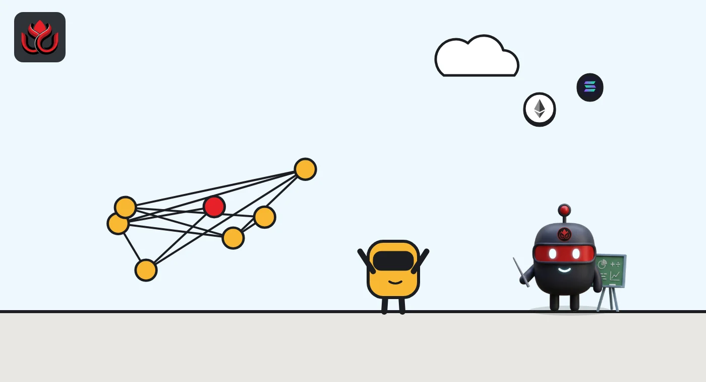
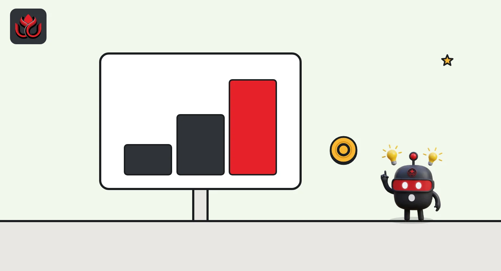

Japan's FSA wants an on-chain finance roadmap by early 2027. Who is at the table?
Japan's Financial Services Agency has opened two new tracks in three weeks: a cross-ministry forum on on-chain finance in the AI era, and a study group on digital and decentralized finance that heard from Nomura and Securitize first.
Key points
- Financial Services Minister Katayama chaired the first meeting of a new on-chain finance forum on September 30, 2026, with the Bank of Japan, the Ministry of Finance and the Digital Agency at the table.
- The forum plans an interim report and a public-private roadmap in early 2027, the FSA's published minutes say.
- A separate FSA study group on digital and decentralized finance met for the first time on October 20, with hearings from Nomura Holdings and Securitize Japan.
Two new tracks in three weeks
Japan's Financial Services Agency (FSA) opened two new policy tracks on blockchain finance within three weeks: a cross-ministry forum on September 30, 2026, and a study group on digital and decentralized finance on October 20.
The first is the Onchain Finance Forum for the AI Era. It held its first meeting on September 30, 2026, chaired by Katayama Satsuki, the Minister of State for Financial Services. The FSA published the minutes on October 19, according to its weekly review. The forum is part of a wider On-Chain Finance Initiative for the AI Era that the FSA announced on September 25, according to its weekly review.
The second is a new Study Group on Responses to Digital and Decentralized Finance. It met for the first time on October 20, from 3 p.m. to 5 p.m. Tokyo time (2 a.m. to 4 a.m. ET), at the government's Central Government Building No. 7, according to the meeting page. Decentralized finance, or DeFi, means financial services such as lending and trading that run on blockchain code instead of through a bank or broker.
Who is at the table
The forum is not an FSA-only exercise. The minutes list senior officials from:
- The Cabinet Office: Minister Katayama as chair, Vice Minister Tanigawa and Parliamentary Secretary Nemoto.
- The FSA: senior officials including the director-general of its Asset Management and Insurance Supervision Bureau.
- The Digital Agency (a director-general), the Ministry of Finance (the heads of its Financial Bureau and International Bureau) and the Bank of Japan (an executive director).
- The Japanese Bankers Association, through the chair of its planning committee.
The study group took a different approach for its opening session. After a briefing from the FSA secretariat, it heard presentations from Nomura Holdings, a large Japanese securities group, and Securitize Japan, the local arm of a firm that issues tokenized securities. The FSA notes on the meeting page that the hearing slides are the companies' own views, not the agency's position.

What the forum wants to do
According to the minutes, the FSA set out three priorities:
- build on-chain finance around real business, such as tokenized assets and payments tied to trade;
- find the right mix of on-chain and off-chain settlement, since blockchains offer round-the-clock, programmable settlement but raise questions about capacity, fees and fixing mistakes;
- protect financial stability and security.
Several ministries brought their own homework. The Digital Agency said it will study paying targeted public benefits with stablecoins or tokenized bank deposits, and review how current laws treat stablecoins. The Ministry of Finance said it would launch a study group in October on putting Japanese government bonds on a blockchain. The Bankers Association is forming an internal group on next-generation interbank settlement, and the Bank of Japan is running a test environment for using central bank account balances on a ledger.
The FSA plans to publish an interim report and a joint public-private roadmap in early 2027, the minutes record. The forum also has seven outside members, and the meeting itself was closed to the public.
The stablecoin numbers the FSA cited
The FSA framed the stablecoin discussion with a market figure: about US$310 billion of stablecoins in circulation, roughly 83% of them tied to the US dollar. A stablecoin is a token designed to hold a steady value, usually one dollar.
It also cited a Bank for International Settlements survey of 90 jurisdictions, which found that about a third have commercial banks running some kind of tokenized deposit project. A tokenized deposit is an ordinary bank deposit recorded on a blockchain.
Closer to home, the FSA said its Payment Innovation Project has backed four projects, including a yen stablecoin remittance scheme and a stablecoin pilot for trade documents announced on September 29.
Stablecoins in circulation cited by Japan's FSA
US$ billion
Source: FSA, minutes of the first Onchain Finance Forum meeting (September 30, 2026). Split calculated by LC Insight from the FSA's rounded figures.

How this fits Japan's crypto rule rewrite
The new tracks sit on top of a bigger legal change. In April 2026 the Cabinet approved an FSA bill to amend the Financial Instruments and Exchange Act and the Payment Services Act, including a framework for revising the rules for crypto assets, Katayama told reporters at an April 10 press conference.
That bill grew out of a 2025 FSA discussion paper, which noted more than 12 million accounts at Japanese crypto exchanges and more than 5 trillion yen in user deposits. The paper floated moving crypto toward securities-style disclosure and adding insider trading rules.
The forum and study group look further ahead: not just how to police crypto trading, but how banks, brokers and the state might settle real money and real assets on blockchains, and how AI agents would fit in. One member's written opinion said payments by AI agents may need checks that the agent is a legitimate party, another member warned about fraud and money laundering, and a third urged regulators to avoid a zero-risk approach that stalls new uses.
LC Insight analysis
This section is our reading of the facts above, not a statement of fact.
- We think the cast list matters more than any single slide. With the Bank of Japan, the Ministry of Finance and the bankers' association in the same room, an early-2027 roadmap could set the plumbing for yen stablecoins and tokenized deposits, not just exchange rules.
- The likely result is that Japan pushes regulated, bank-led tokens first. Opening the DeFi study group with a big broker and a tokenized securities firm suggests the FSA is studying DeFi through the lens of existing finance.
- The open question is speed. A study group, a forum and a government bond working group all report on different clocks, and real changes would still need laws and ordinances.
What's next
- Next meetings of the digital and decentralized finance study group and who testifies
- The Ministry of Finance study group on putting government bonds on-chain
- The forum's interim report and roadmap, promised for early 2027
- Progress of the FSA bill revising crypto asset rules
Disclaimer. This article is based on public information and the sources listed below as of the update time shown. It is for information only and is not investment, legal or tax advice. Figures may change as companies and authorities publish new data.
Sources
- FSA, minutes of the first Onchain Finance Forum for the AI Era meeting (September 30, 2026, in Japanese)
- FSA, first meeting of the Study Group on Digital and Decentralized Finance (October 20, 2026, in Japanese)
- FSA Weekly Review No. 708 (October 27, 2026)
- FSA Weekly Review No. 704 (September 29, 2026)
- FSA, press conference by Minister Katayama (April 10, 2026)
- FSA, Examination of the Regulatory Systems Related to Cryptoassets (April 10, 2025)